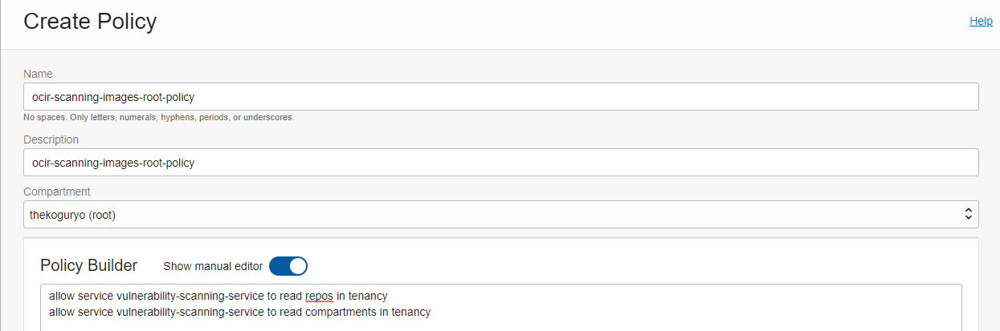
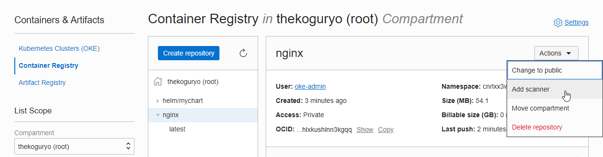
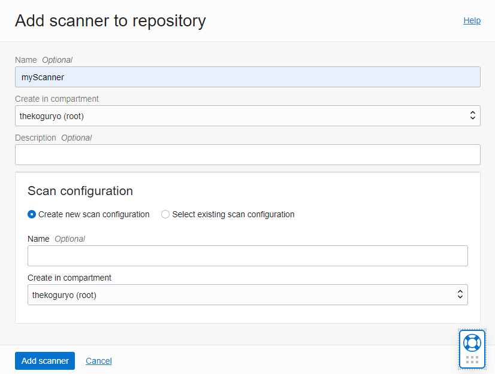
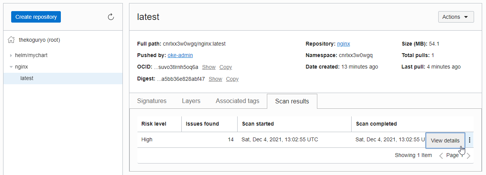
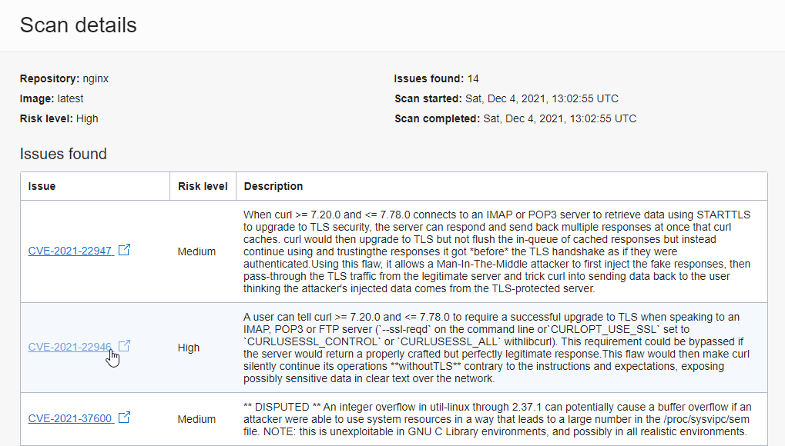
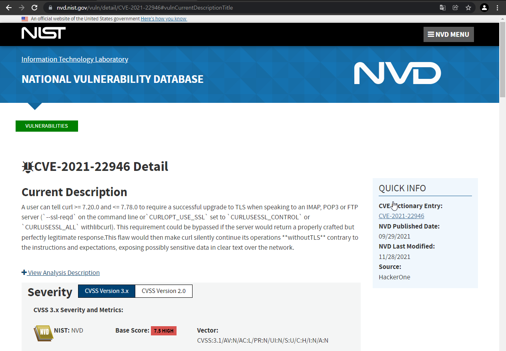

3.1 컨테이너 이미지 스캔
OCIR는 알려진 Common Vulnerabilities and Exposures (CVE) database를 기반으로 컨테이너 이미지에 대한 취약점 분석 기능을 제공하고 있습니다. 다음은 취약점 분석을 위한 이미지 스캔 기능을 확인해 봅니다.
공식 문서
관련 Policy 설정
스캔 서비스가 OCIR repository에 대한 권한을 부여합니다. 적용해야 하는 Policy는 위 공식 문서를 참조합니다. tenancy 전체 또는 compartment 에 대해서 지정할 수 있습니다.
-
전체 테넌시
- 이름 예, ocir-scanning-images-root-policy
allow service vulnerability-scanning-service to read repos in tenancy allow service vulnerability-scanning-service to read compartments in tenancy -
특정 compartment
allow service vulnerability-scanning-service to read repos in compartment <compartment-name> allow service vulnerability-scanning-service to read compartments in compartment <compartment-name> -
설정 예시

이미지 스캐너 설정
이미지 스캐너는 repository 단위로 기능 추가, 삭제 할 수 있습니다. 테스트를 위해 먼저 이미지를 배포합니다.
-
OCIR 이미지 사용하여 앱 배포하기를 참고하여 OCIR에 이미지를 배포합니다.
-
OCIR에 이미지 배포
docker pull nginx:latest docker tag nginx:latest ap-seoul-1.ocir.io/cnrlxx3w0wgq/nginx:latest docker push ap-seoul-1.ocir.io/cnrlxx3w0wgq/nginx:latest -
OCI 콘솔에 로그인합니다.
-
좌측 상단 햄버거 메뉴에서 Developer Services > Containers & Artifacts : Container Registry로 이동합니다.
-
List Scope에서 대상 Compartment(예, root)를 선택합니다.
-
스캐너를 설정할 Repository(예, nginx)를 선택하고 오른쪽 Actions 메뉴에서 Add scanner를 선택합니다.

-
생성할 스캐너의 compartment 위치를 확인하고, 처음 스캐너 사용이므로 Create new scan configuration으로 선택하여, 스캐너를 추가합니다. 현재는 스캐너별로 따라 추가 설정할 수 있는 기능이 없는 것으로 보여, 한번 만들고 다음부터는 만든 것을 사용하면 됩니다.

-
스캐너 결과 확인
스캐너가 추가된 nginx repository에 대해서 tag 별로 컨테이너 이미지 상세 정보를 볼 수 있습니다. Scan results 탭을 보면 스캔 결과를 확인할 수 있으며, View details를 통해 상세 정보를 확인할 수 있습니다.

-
취약점 확인
이미지 스캐닝 결과 확인 알려진 CVE 정보를 기반한 취약점을 확인 할 수 있으며, 취약점를 클릭하면, 실제 CVE 데이터 베이스로 이동하여, 상세 정보를 확인 할 수 있습니다.


** 이 글은 개인으로서, 개인의 시간을 할애하여 작성된 글입니다. 글의 내용에 오류가 있을 수 있으며, 글 속의 의견은 개인적인 의견입니다. **